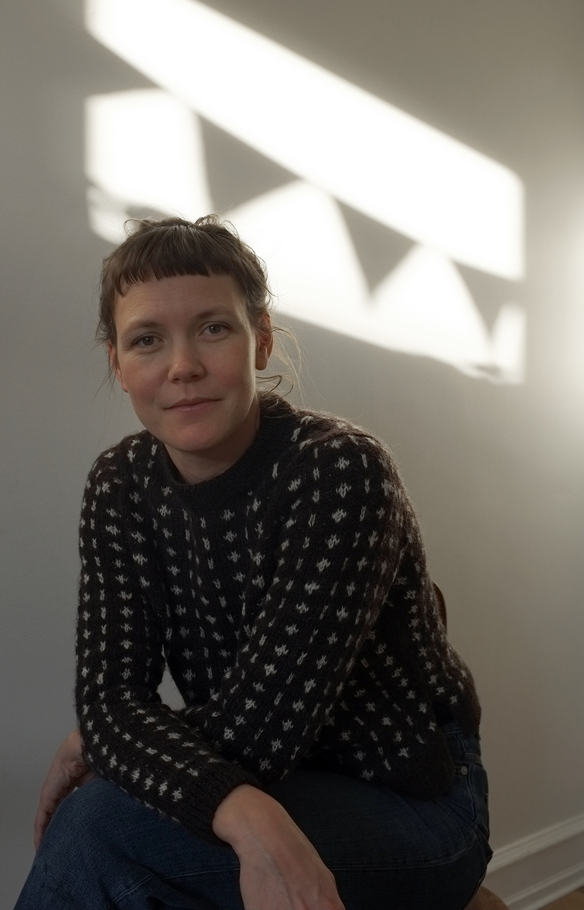
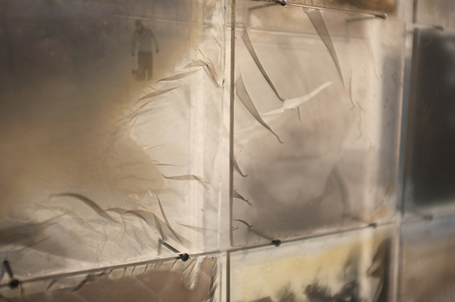
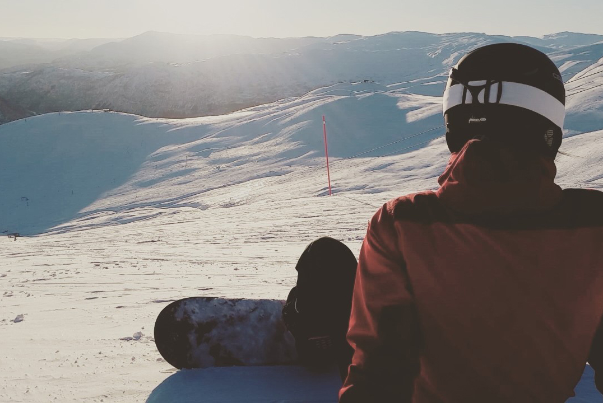

Om mig

Mit navn er Monica A. Amundsen, jeg kommer fra Bergen i Norge. Jeg bor på Nørrebro med min mand og to små børn. Jeg kan lide design, foto, glas, stå på ski og lege i sneen.


CV
Relevant uddannelse og arbejdserfaring
• 2014-2015 Værkstedsmanager og underviser ved S12 Galleri og Værksted, Bergen, NO.
• 2011-2012 Fatamorgana, Danmarks Fotografiske Billedkunstskole, DK
• 2008-2011 Bachelor fra Kunstakademiets Designskole, Glasformgivningsfaget, Bornholm, DK
• 2005-2008 Lærling som glaspuster hos Stine Hof Kunstglas. Bergen, NO
Kontakt
monica.alv.amundsen@gmail.com
www.monicaamundsen.com